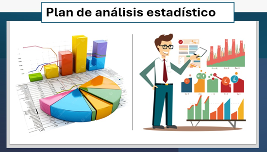
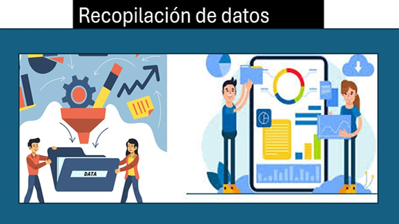

Unidad III. Interpretación de los resultados de la investigación
Plan de análisis estadístico permite establecer una estrategia organizada que define cómo se procesarán, examinarán e interpretarán los datos obtenidos durante una investigación. Este plan se diseña antes de analizar la información y especifica los procedimientos estadísticos
ocupados para sustentar preguntas del proyecto de investigación, así como hipótesis. Su finalidad es asegurar que los datos recolectados se transformen en resultados significativos y coherentes con los objetivos del estudio.
Plan de análisis estadístico establece la preparación de los datos, incluyendo la codificación, depuración, estructuración de la bases de datos que contine la información. Asimismo, determina el tipo de análisis que se realizará desde la estadística descriptiva en frecuencias, porcentajes, medias y desviación estándar, para resumir los datos y estadística inferencial (pruebas t, chi cuadrada y correlación,
regresión) para establecer relaciones, diferencias o asociaciones entre variables. La selección de estas pruebas depende del tipo de variables, el diseño del estudio y el nivel de medición de los datos.
Además, este plan permite interpretar los resultados de manera objetiva, facilitando la comprobación de hipótesis y la generación de conclusiones científicamente válidas. En la actualidad, el análisis estadístico se apoya en software especializado que optimiza el procesamiento de datos y reduce errores, fortaleciendo la precisión y confiabilidad del estudio. Un plan bien estructurado garantiza coherencia metodológica y
contribuye a la validez y rigor científico de la investigación.
Figura 3.4Plan de análisis estadístico

Nota. Elaboración propia basada en Metodología de la investigación (6.ª ed.). Hernández Sampieri, R., Fernández Collado, C., & Baptista Lucio, M. P. 2014 McGraw-Hill Education.
Recopilación de datos
Procedimiento organizado mediante el cual el investigador obtiene información pertinente y confiable, atendiendo la pregunta de estudio y hipótesis.
Esta etapa proporciona evidencias objetivas con base en el análisis y resultados. La información recolectada puede ser de naturaleza cuantitativa,
cuando se expresa en valores numéricos medibles o cualitativa, cuando describe percepciones, experiencias o características del fenómeno estudiado. Hernández Sampieri et al., (2014).
Este proceso requiere seleccionar fuentes apropiadas y emplear técnicas e instrumentos adecuados, tales como encuestas, entrevistas, observación directa, cuestionarios, registros clínicos o revisión documental. La recolección
debe efectuarse de manera sistemática, ética y organizada, con validez y resultados. La planificación por lo general reduce errores, evita sesgos y garantiza la calidad de la información que sustentará el
estudio.
Las tecnologías digitales, banco de datos científicas y sistemas electrónicos ha optimizado la recopilación de datos, permitiendo manejar grandes volúmenes de información con
rapidez y precisión, permite una adecuada recolección de datos y resulta esencial para el diagnóstico.
Figura 3.5Recopilación de datos

Nota. Elaboración propia basada en Metodología de la investigación (6.ª ed.). Hernández Sampieri, R., Fernández Collado, C., & Baptista Lucio, M. P. 2014 McGraw-Hill Educación.
3.2.2
Procesamiento y organización de datos
Es la etapa posterior a la recopilación de información en la que los datos obtenidos se clasifican, depuran y estructuran utilizando el análisis para la información. Este proceso implica revisar la información recolectada para detectar errores, eliminar inconsistencias,
codificar respuestas y agrupar los datos en categorías o variables que permitan su manejo sistemático. Una adecuada organización asegura que la información sea comprensible, accesible y útil para responder al proyecto a investigar (Hernández Sampieri et al., 2014).
Procesamiento de datos incluye actividades como la tabulación, codificación, digitalización y almacenamiento en matrices o bases de datos. En estudios cuantitativos, los datos suelen organizarse en tablas estadísticas o programas informáticos para su análisis numérico, mientras que
en investigaciones cualitativas se clasifican en categorías temáticas que permiten identificar patrones, significados y relaciones. Esta etapa es esencial para la validez de los resultados y evitar interpretaciones erróneas derivadas de información mal estructurada.
En la actualidad, el uso de software especializado y herramientas digitales ha optimizado el procesamiento y organización de datos, permitiendo manejar grandes volúmenes de información con mayor rapidez, precisión y seguridad. En las ciencias de la salud, esta fase resulta crucial para
interpretar resultados clínicos, generar evidencia científica confiable basadas en datos, beneficiando la calidad de atención y salud.
Elementos y procesamiento con organización de datos
Depuración de datos
Consiste en revisar la información recopilada para detectar errores, omisiones, duplicidades o inconsistencias que puedan afectar la validez del estudio.
Codificación
Implica asignar símbolos, números o etiquetas a las respuestas o variables para facilitar su registro y análisis, especialmente en estudios cuantitativos.
Clasificación o categorización
Se agrupan los datos según características comunes o variables de estudio. En investigaciones cualitativas, se organizan en categorías temáticas; en las cuantitativas,
por variables y valores.
Tabulación
Proceso de organizar los datos en tablas o matrices para resumir la información y facilitar su análisis estadístico.
Digitalización y almacenamiento
Consiste en introducir los datos en sistemas electrónicos o bases de datos para su resguardo, consulta y procesamiento posterior.
Presentación de datos
Incluye la organización visual de la información mediante cuadros, gráficas, diagramas o matrices que faciliten su comprensión e interpretación.
Figura 3.6Procesamiento y organización de datosNota. Elaboración propia basada en Metodología de la investigación (6.ª ed.). Hernández Sampieri, R., Fernández Collado, C., & Baptista Lucio, M. P. 2014 McGraw-Hill Educación.